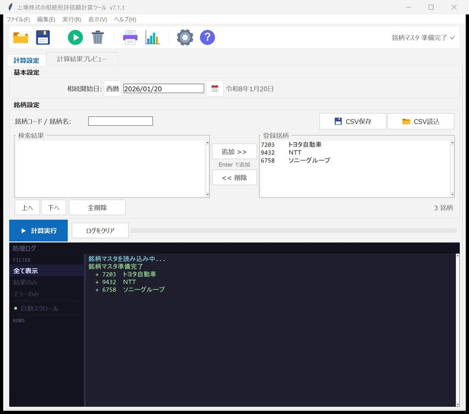
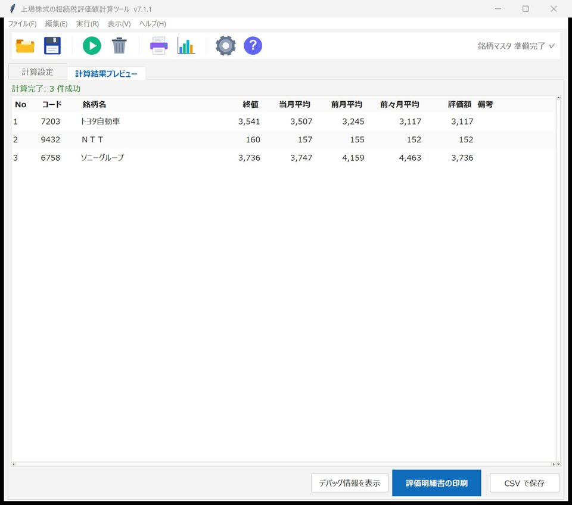
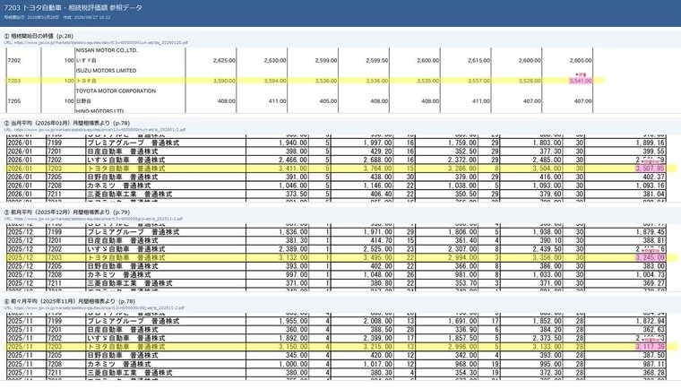

証券コードと相続開始日だけで、評価明細書PDFまで。
財産評価基本通達169に準拠し、相続開始日の終値と当月・前月・前々月の月間平均——4つの価額から最小値を自動採用。採用根拠をマーキングした証跡画像まで残せる、相続税評価の補助計算ツールです。
相続開始日 2026年1月20日
7974任天堂
| 相続開始日の終値2026年1月20日 | 10,445.00 | 採用 |
|---|---|---|
| 当月平均2026年1月 | 10,307.42 | 採用 |
| 前月平均2025年12月 | 11,473.86 | 採用 |
| 前々月平均2025年11月 | 13,431.94 | 採用 |
| 評価額4つの価額のうち最も低い価額 | 10,307.42 | 円 |
体験版は無料。ご購入いただくとライセンスキーで全機能が解除されます。配布・決済は Vector が行います。
- 版
- StockValuation 7.1.3
- 対応OS
- Windows 10・11（64bit）
- 提供
- Nanax Soft
集計と転記の積み重ねを、入力ひとつに。
上場株式の相続税評価では、相続開始日の終値に加えて、その月・前月・前々月の月間平均終値を銘柄ごとに集め、4つの価額を比べて最も低い額を採用します。資料を一銘柄ずつ探して数字を拾い、評価明細書へ書き写す——銘柄が増えるほど時間がかかり、転記ミスのリスクも高まります。
本ツールなら、証券コードと相続開始日を入力するだけ。4つの価額の集計・最小値の採用・評価明細書PDFへの記入までを自動化し、数時間かかっていた集計・転記を分単位に短縮します。
※ 短縮効果は標準的なケースの目安です。銘柄数・回線環境により変動します。
使い方 — 画面の流れに沿って3ステップ
-
1 ／ 3
銘柄を登録する
相続開始日を入れ、証券コードまたは銘柄名で検索して登録。複数銘柄をまとめて登録できます。英字を含む銘柄コード・上場廃止銘柄・ETF／REITにも対応します。

相続開始日と銘柄を登録（複数銘柄の一括登録に対応）原寸で開く -
2 ／ 3
計算する
「計算実行」を押すと、終値・当月／前月／前々月の月間平均の4価額を集計し、最小値（評価額）を自動採用。結果を一覧でプレビューできます。

4つの価額と、採用した評価額（最小値）を一覧表示原寸で開く -
3 ／ 3
評価明細書PDFを出力する
国税庁様式（資4-30）に沿った「上場株式の評価明細書」PDFを自動作成。Excel（個別＋サマリー）も出力できます。申告書類の下書き・補助資料としてご活用ください。
国税庁様式「上場株式の評価明細書」（資4-30）に各欄を記入した下書きPDF原寸で開く


「どの数字を、なぜ採ったか」が残る
評価額の根拠となった終値・月平均は、参照した公開資料の該当行をマーキングした画像（証跡）として保存できます。採用の経緯が一目で分かるため、確認や説明のしやすさが高まります。

- 相続開始日の終値日報PDF
- 当月平均月間相場表
- 前月平均月間相場表
- 前々月平均月間相場表

主な機能
正確性・説明可能性・時短を、実務の流れに沿って支援します。
- 4価額の最小を自動採用
- 財産評価基本通達169準拠。相続開始日の終値（休日は近傍の営業日へ補正）と、当月・前月・前々月の月間平均終値から最小値を自動で採用します。
- 採用根拠のマーカー画像（証跡）
- 採用した数値が公開資料のどこから来たか、該当箇所をマーキングした画像を保存。後からの確認・説明に使えます。
- 国税庁様式の評価明細書PDF
- 「上場株式の評価明細書」様式（資4-30）に沿ったPDFを自動作成。Excel（個別＋サマリー）も出力できます。
- JPX営業日カレンダーで休日補正
- 相続開始日が休日でも、JPX営業日カレンダーに基づき近傍の営業日へ自動補正します。
- 複数銘柄を一括処理
- 複数銘柄をまとめて評価し、銘柄個別＋サマリーで出力。CSVでの銘柄の読込・保存にも対応します。
- 実務ケースに対応
- 上場廃止銘柄、英字を含む銘柄コード、ETF・REITに対応。多様な相続案件で使えます。
動作環境
- 対応OS
- Windows 10／11（64bit）
- 導入
- exe 単体で動作（インストール不要・Python等の事前導入は不要）
- インターネット接続
- 株価等の公開資料の取得に必要
- ライセンス
- シェアウェア（無料体験版あり・購入でライセンスキーにより全機能解除）
株価等の情報は、お使いのパソコン上で公開されている資料から取得して計算します（当社のサーバーに株価データを蓄積・再配信することはありません。取得は必要最小限の範囲・間隔で行う設計です）。
よくある質問
ご購入前に、無料の体験版で動作・適合をご確認いただけます。
無料の体験版には、どんな制限がありますか？
(1) 登録できる銘柄は2件まで。
(2) 計算結果の「前々月平均」と「評価額」は伏字（***）で表示されます。
(3) 出力物（評価明細書PDF・Excel・証跡画像）に「体験版」の透かしが入ります。
(4) プロジェクトの保存はできません。
(5) 初回起動から24時間で体験期間が終了し、以降は計算・出力ができません。
ライセンスキーをご購入・ご登録いただくと、上記の制限はすべて解除され、全機能をご利用いただけます。
どのように評価額を計算していますか？
出力される評価明細書PDFは、そのまま申告に使えますか？
株価データはどこから取得されますか？保存・再配信されますか？
複数の銘柄をまとめて評価できますか？
インストールやPythonの導入は必要ですか？
ご利用上の注意・免責
本ソフトは、相続税評価額の算定および申告書類作成を補助する計算ツールであり、税務上の助言を行うものではありません。評価額・申告内容の最終的な確認と判断、申告の責任は利用者（税理士等）に帰属します。
出力（評価明細書PDF・Excel・証跡画像）は下書き・補助資料です。提出前に必ず原典（公開資料）と照合してください。公開資料の様式変更・記載揺れ等により、取得値や判定が誤る可能性があります。正確性・完全性・継続的な動作は保証しません。
株価等の情報は、利用者のパソコン上で公開資料から取得します。当社はデータを保持・再配信しません。本ソフトの使用または使用不能により生じた損害について、当社は法令で許容される範囲で責任を負いません。
評価明細書PDFは、国税庁が公開する「上場株式の評価明細書」様式（資4-30）に基づき、本ソフトが各欄へ記入した下書きです（出典：国税庁）。様式そのものは国税庁の著作物であり、本ソフトが作成・編集したものではありません。
特定商取引法に基づく表示
| 販売事業者（屋号） | Nanax Soft |
|---|---|
| お問い合わせ窓口 | nanax.soft@gmail.com |
| 販売価格 | ¥9,800（税込）。Vector シェアレジ経由でのご購入の場合、価格には消費税および Vector 所定の手数料が含まれます。最新の金額は各商品ページの表示をご確認ください。 |
| 商品代金以外の必要料金 | インターネット接続料金・通信料等はお客様のご負担となります。Vector シェアレジ経由でご購入の場合、シェアレジ所定の手数料が購入代金に含まれます。 |
| お支払い方法 | 販売チャネル（Vector シェアレジ等）が定める方法によります。 |
| お支払い時期 | 各販売チャネルの定めによります。 |
| 商品の引渡時期 | ダウンロード商品です。お支払い確認後、ダウンロード／ライセンスキーのご案内をもって提供します。 |
| 返品・キャンセル | デジタル商品の性質上、ご購入後の返品・返金はお受けできません。ご購入前に、動作環境・ご利用上の注意・免責事項を必ずご確認ください。無料の体験版で、動作・ご利用環境との適合を必ずご確認のうえご購入ください。 |
| 動作環境 | Windows（64bit）。詳細は上記の動作環境欄をご確認ください。 |
事業者の氏名・住所・電話番号は、ご請求をいただいた場合、上記のお問い合わせ窓口より遅滞なく（電子メールにて）開示します。
まずは無料体験版で、動作と適合を。
配布・決済はVector（ソフトライブラリ＝本体／シェアレジ＝ライセンスキー）が行います。ご購入いただくと、ライセンスキーで全機能をご利用いただけます。
- 価格
- ¥9,800 （税込・買い切り）
- 体験版
- 無料（Vector からダウンロード）
- お問い合わせ
- nanax.soft@gmail.com